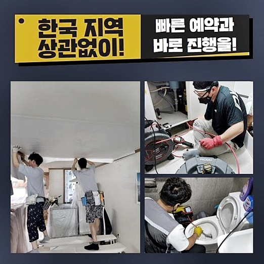
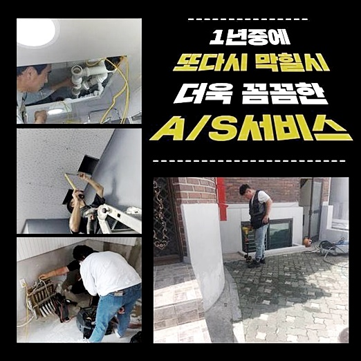
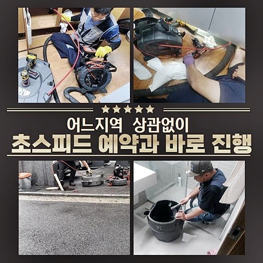
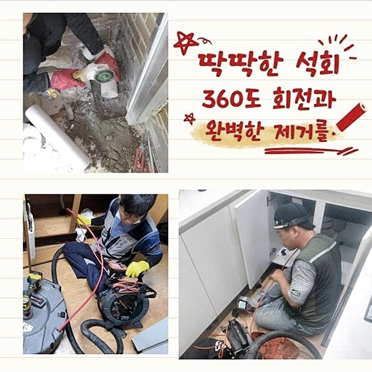
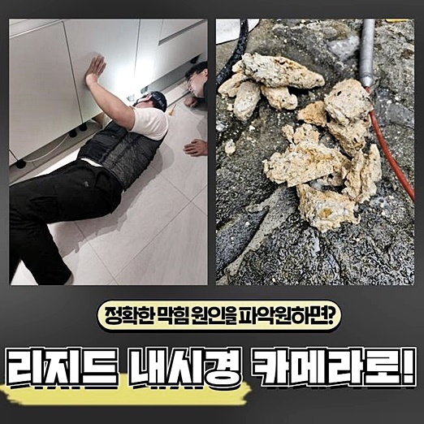
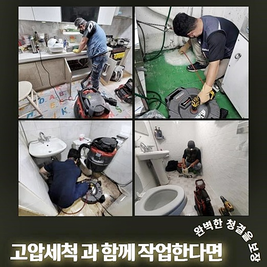
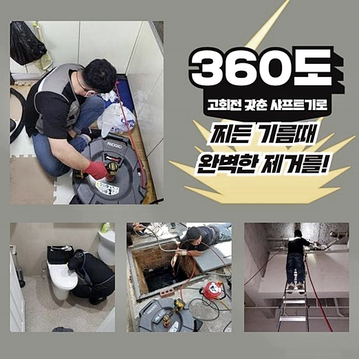

🏠 관악구 중앙동하수구역류 난향동 배수로뚫기 물샘전문업체
용인시 처인구 하수구청소 전문 시공 후기

📋 작업 개요
- 위치: 용인시 처인구, 수원시 영통구, 화성시 동탄
- 서비스 유형: 하수구청소, 내시경점검
- 작업 일시:
- 업체명: 하수구수사대 (010-5615-2118)
🔍 문제 상황
관악구 중앙동하수구역류 난향동 배수로뚫기 물샘전문업체
하수관이 막히는문제는 많이 발현되지만 처리하기어려운 문제중에 하나라고할수있죠
싱크대에서는 기름슬러지들이 하수도내에 쌓이게되서 빈번히 발현됩니다
그렇지만 막힐때마다 전문설비업체를 호출해보는게 불편하다고 자가조치를 통해서 해결하시는분이 많죠
잠깐의 효과를볼순있지만 확실하게 원인제거를 못했기에 올바른방식이 아니랍니다
얼마전에 방문드린 현장사례로 뚫는작업을 살펴보시면 도움이되실거에요
막히는일이 발생되는 근원적인원인먼저 알려드려볼게요
특별히 설거지하고나서 기름기하고 남은물이 정상적인 상태로 흘러나가지않고 멈춰있다가 굳어지며 발생되는 상황이많죠
대부분의 가정에선 빠르게 해결하고자 온수의물을 부어보거나 시중에서 쉽게구할수있는 약품들을 사용했지만 해결되지않고 되려 역류증세가 발생되기도합니다
정상적인 배수가되지 않는다고 성급하게 저희들에게 연락주셨죠
현장장소에 방문하여 신속히 살펴보았어요
하부장쪽과 연결되어있는 호스를제거한뒤 배관속에 석션장비를 집어넣었습니다

🔎 원인 분석
💡 전문가 진단: 정밀 진단 장비를 사용하여 슬러지의 고착 여부를 판명하고 타격/세척 작업을 실시했습니다.
석션장비란 진공청소기하고 흡입하는 장비라고 생각하시면됩니다
강한힘으로 오염물질이나 오수들을 제거하는방법이죠
대다수의 하수구들은 앞에 말씀했듯이 오염물때문에 막혀버립니다
그렇기에 빨아들이는 석션기계를 이용하여 오염물질의 정도를 체크해가면서 간단하게 막혀있는경우엔 석션만을통해 해결하고있어요
그렇지만 이번현장에서는 배관내부쪽에 오랜기간 퇴적되었기에 고착물질은 흡입해내지못하고 잔여물만 제거되었는데요
다음에는 내시경기계를 이용해서 내부속을 살피고자했어요
육안만으로는 파악이불가한 하수구안속을 파악하려면 내시경장비로 살펴봐야합니다
가끔 내시경장비없이 해결하려는 일도있어요
내시경기계없이 살펴볼수없는 위치에 문제증상이 기계없이 무작위로 쑤시면 하수구손상및 파손까지 다양한문제가 발발될수있어요
배관내부를 확인할수없다면 정확하게 원인파악을 할수없어 재발문제가 일어날수있죠
내시경기기를 통하여 꼼꼼히살펴보니 예측했던대로 기름슬러지들이 상당하게 발견되었어요
물이빠져나갈 상황이 보이지못했으며 그로인해 개수대쪽까지 막혀버리게 된것으로 추측할수있었어요

🔧 작업 과정
하수도cctv로 하수구안을 보았으면 드디어 뚫는과정에 들어가게된답니다
하수구의구조나 내부설계로 문제를보인게 아니기에 배관청소를 진행해야했는데요
분해장비를 활용하여 고착되어진 잔여물부터 분해하는과정이 이루어져야해요
흡입장비로만은 제거하기어려운 딱딱한 오염물이있을때 분쇄기기를 활용하여 흡입이 가능하도록 석회를잘게 분쇄시키는거예요!
내부에쌓여있는 고착물들도 분쇄가가능하므로 필수기계에요
분해과정을 진행한후 석션기로 잔여물질과 찌꺼기를 전체적으로 제거하고있어요
석션통으로 걸려봤더니 상당량의 오염물질들이 제거된상태임을 확인할수있었죠
오물만 빠져나왔던 상황과는달리 제대로이루어진 하수구뚫음의 제거과정을 진행하고있다는것으로 알고계시면 좋겠습니다
슬러지만 조각낸뒤에 석션으로 찌꺼기를 없애지못하면 잔해물들이 뭉치게되어 크기가 커지게되고 다른배수구로 유입되는 위험도있기에 분쇄작업후 흡입하는과정을 통해서 잔여물을 제거해내야해요
확실히 뚫으려면 내시경기계와 흡입기와 샤프트기들이 삼단계로 순차에맞게 이루어져야합니다
내시경을통하여 원인을우선 파악한뒤에 분쇄장비로 잘게부수고 석션장비로는 잔여물흡입을 하고있다고 생각해주시면 되겠습니다
잔여물로인하여 막혀있는지점이 어디인지체크한후 이범위를 중심으로 청소작업에 착수합니다
분쇄완료된 잔여물질들은 파이프를통해 석션통에 걸러집니다
하수구에 남겨지지않도록 바깥으로 빼내주는거에요
본래는 슬러지로만 이루어졌지만 오물과 찌꺼기들이 뭉쳐지면서 단단하게 굳어진겁니다
막힐위험없이 내려갈수있는 오물만 변기쪽에 흘려보낸뒤 큰석회의 경우에는 따로챙겨가서 처리해줘야해요
일련의 수리과정을 마무리하면 하수관으로 돌아간후 물을흘려보는 배수검수를 통해 확인하면된답니다
전상황과다르게 원활하게 빠져나가는걸 살피고 마칠수있었어요
오늘포스팅은 일상에서 하수도가 막히게되었을때 무슨방법으로 해결해봐야하는지 알아보았어요
혼자의방식으로 해결되지않으면 주저하지말고 전화주세요!


✅ 작업 완료
신속히 내방하여 깔끔하게 처리하겠습니다
저희한테 의뢰주시면 신뢰해주심에 보답으로 꼼꼼하게 작업에착수해 성공하는결과로 보여드리겠어요!
어떤곳이든 1시간안으로 방문이가능하며 투명히 작업계획을 공개해드리니 염려하지않아도 된답니다
문제의증상을 방치하지말고 전조증세를 보일때 조치해보는게 알맞은 대책이랍니다
이것말고도 궁금한부분이 있으시면 아무때나 질문하셔도되니까 전화주시면 세세한응대로 진행하고자하니 안심해주세요!




⚠️ 하수구 배관 막힘 예방 및 관리 가이드
- ✅ 머리카락, 비닐, 물티슈 등 물에 분해되지 않는 이물질은 절대 흘려보내지 마세요.
- ✅ 기름기 많은 식기는 설거지 전 키친타올로 먼저 기름때를 닦아내세요.
- ✅ 주기적으로 배수구에 뜨거운 물을 가득 부어주어 유지방 고착을 방지하세요.
- ✅ 작업 후 1년 이내 재발 시 무상 A/S 보증 서비스를 제공합니다.
💡 핵심 정리
- 확실한 장비 작업(내시경 점검 및 샤프트 스케일링)으로 원인을 뿌리 뽑습니다.
- 작업 후 1년 이내에 동일한 부위 재발 시 100% 무상 A/S 서비스를 보장합니다.
- 서울 · 경기 · 인천 전 지역에 24시간 언제든 긴급 출동할 수 있도록 항시 대기 중입니다.
❓ 자주 묻는 질문 (FAQ)
🚨 용인시 처인구 하수구청소 문제로 고민이신가요?
정확한 원인 진단과 확실한 시공으로 재발 없는 해결을 약속드립니다.
24시간 긴급 출동 | 서울 · 경기 · 인천 전지역 | 1년 내 재발 시 무상 A/S